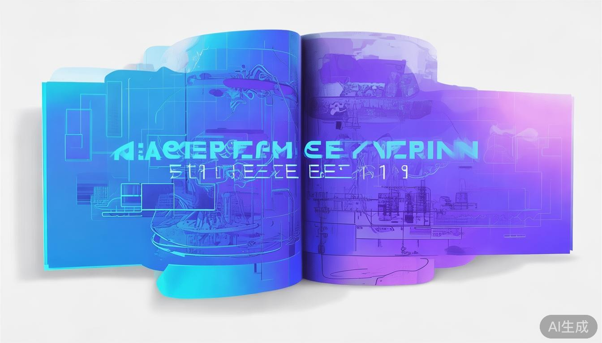

AI 时代工科学习全景 · 编程 / 计算机 / 数控 / 仿真（实战篇）
这一篇不跟你讲虚的。你要的是「真的能写、真的能练、真的能下载」。所以下面每个主题，我都给真实代码、真实工具、真实步骤。AI 时代的工科学习，核心就一句话：让 AI 当你的私人导师 + 模拟器，你负责动手练。
一、AI 时代怎么学编程
1.1 选语言：Python 一票通过
工科 + AI 时代，学编程首选 Python。原因：语法最接近人话、库最全（科学计算、仿真、AI、爬虫全都有）、AI 对它的支持最好。
1.2 把 DeepSeek 当私人导师（这是新学法）
传统学法：买书 看视频 卡 bug 放弃。AI 时代学法：
你是一位耐心的编程老师。我是零基础。
请用费曼学习法给我讲「{概念}」，先一句话总结，再给生活化比喻，
最后给我 3 道由易到难的练习题。
遇到报错，把完整报错贴回去让它解释原因和改法——这是 AI 时代学编程最值钱的用法，没有之一。
1.3 学习路线（从 0 到能干活）
- 语法基础：变量、条件、循环、函数（1-2 周）
- 数据结构：列表、字典、元组（1 周）
- 实战项目：写个小工具（爬虫/自动化/计算器）
- 进阶：面向对象、模块、调试
1.4 真实代码：第一个能跑的程序
# 一个能跑的科学计算器（学了函数和循环就能写）
def calc():
print("科学计算器 · 输入 quit 退出")
while True:
expr = input("> ")
if expr.lower() == "quit":
break
try:
print("=", eval(expr)) # 新手先用 eval，理解后再学安全写法
except Exception as e:
print("错误：", e)
calc()
再写一个自动化的：
# 批量重命名文件（工科生整理实验数据常用）
import os
def batch_rename(folder, prefix):
for i, name in enumerate(sorted(os.listdir(folder)), 1):
ext = os.path.splitext(name)[1]
new = f"{prefix}_{i:03d}{ext}"
os.rename(os.path.join(folder, name), os.path.join(folder, new))
print(f"{name} -> {new}")
batch_rename(r"D:\实验数据", "样本") # 把路径换成你的
二、AI 时代怎么学计算机

计算机基础就四块，别贪多，按顺序啃：
| 模块 | 学什么 | 为什么要学 | 多久 |
|---|---|---|---|
| 计算机组成 | CPU/内存/硬盘怎么工作 | 理解程序怎么跑 | 2 周 |
| 操作系统 | 进程、内存、文件系统 | 理解软件运行环境 | 3 周 |
| 计算机网络 | TCP/IP、HTTP、DNS | 理解一切联网应用 | 3 周 |
| 数据结构与算法 | 数组/链表/树/排序 | 面试 + 编程内功 | 长期 |
AI 学法：每学一个概念，让 DeepSeek 用「生活化比喻 + 小测验」讲一遍；每学一个算法，让它给一个「手算例子」带你走一遍。
三、AI 时代怎么操控数控编程（CNC）
3.1 数控编程是什么
数控机床（CNC）靠 G 代码（G-code） 控制。G 代码就是「告诉机床：往哪走、走多快、切多深」的一串指令。
3.2 AI 怎么帮你写 G 代码
你描述需求，AI 生成 G 代码骨架，你在仿真器里验证后再上真机：
你是数控编程工程师。我要在 100x100 的铝板上铣一个 20x20 的方槽，
深度 2mm，用 6mm 平底铣刀。请写一段 G 代码，并解释每行的含义。
3.3 真实 G 代码示例（可看懂）
; 铣一个 20x20 方槽（示例，坐标单位 mm）
G21 ; 公制单位
G90 ; 绝对坐标
G17 ; XY 平面
G0 Z5 ; 抬刀到安全高度
G0 X0 Y0 ; 快速移动到起点
G1 Z-2 F60 ; 下刀 2mm，进给 60
G1 X20 F100 ; 铣到 (20,0)
G1 Y20 ; 铣到 (20,20)
G1 X0 ; 铣到 (0,20)
G1 Y0 ; 回到 (0,0) 完成一圈
G0 Z5 ; 抬刀
M30 ; 程序结束
3.4 开源数控工具（免费，能真练）
| 工具 | 用途 | 特点 |
|---|---|---|
| LinuxCNC | 开源数控控制系统 | 真实机床控制，工业级 |
| GRBL | 开源运动控制固件 | 跑在 Arduino 上，DIY 雕刻机首选 |
| FreeCAD + CAM | 开源 CAD/CAM | 画图 + 自动生成刀路 |
| NCViewer / CAMotics | G 代码仿真 | 写好的代码先仿真看刀路，不上真机 |
红线：G 代码必须先在仿真器里跑，确认刀路无误，再上真机——真机撞刀会出事故。
四、工科实训怎么练
工科实训的核心是「动手」。AI 时代，实训可以这样升级：
| 实训方向 | 传统做法 | AI 时代做法 |
|---|---|---|
| 机械制图 | 手绘/二维 CAD | AI 辅助三维建模（FreeCAD/Onshape） |
| 电路设计 | 面包板试错 | 先用仿真软件验证再搭 |
| 单片机 | 从零啃寄存器 | AI 生成代码框架 + 仿真调试 |
| 机器人 | 反复撞车 | Gazebo 仿真里先跑通再上真机 |
| 实验报告 | 手写整理 | AI 整理数据、绘图、排版 |
心法：AI 能帮你「少走弯路」，但「动手」这一步谁也替不了。仿真是实训的「安全网」，真机是「考试」。
五、仿真模拟（重点 · 特别多）
5.1 为什么要仿真
仿真 = 在电脑里「预演」真实世界。它的价值：
- 省钱：撞机、烧板、爆炸，都先在电脑里发生，不花钱不伤人。
- 加速：真实实验要几天，仿真几秒。
- 安全：危险的、不可逆的，先在仿真里试。
- 可视化：看不见的（应力、电场、流场）能画出来。
5.2 仿真类型 + 对应开源工具（全部免费）
| 仿真类型 | 开源工具 | 能干什么 |
|---|---|---|
| 物理/机械仿真 | Blender、Gazebo | 刚体、碰撞、机器人运动 |
| 电路仿真 | LTspice、KiCad(内置 ngspice) | 电路、模拟信号 |
| 机械设计/有限元 | FreeCAD(FEM)、CalculiX | 应力、变形、结构分析 |
| 流体/热仿真 | OpenFOAM | 流体力学、传热 |
| 多物理场 | Elmer、FEniCS | 电磁、热、结构耦合 |
| 通用科学仿真 | Python(numpy/scipy/matplotlib) | 数学建模、算法验证 |
| 机器人仿真 | Gazebo + ROS | 机器人运动学、SLAM |
5.3 Python 仿真实战（真实代码，能直接跑）
例 1：抛体运动仿真（学物理 + 学 Python 一步到位）
import numpy as np
import matplotlib.pyplot as plt
# 物理参数
v0, theta = 20.0, 45.0 # 初速度 20 m/s，仰角 45°
g = 9.81
vx = v0 * np.cos(np.radians(theta))
vy = v0 * np.sin(np.radians(theta))
t = np.linspace(0, 2*vy/g, 200) # 飞行时间
x = vx * t
y = vy * t - 0.5 * g * t**2
plt.plot(x, y)
plt.xlabel("水平距离 (m)")
plt.ylabel("高度 (m)")
plt.title("抛体运动仿真")
plt.grid(True)
plt.show()
例 2：RC 电路充电仿真（电路 + 微分方程）
import numpy as np
import matplotlib.pyplot as plt
R, C, V = 1e3, 1e-6, 5.0 # 1kΩ, 1µF, 5V
tau = R * C
t = np.linspace(0, 5*tau, 500)
vc = V * (1 - np.exp(-t/tau))
plt.plot(t*1e3, vc)
plt.xlabel("时间 (ms)")
plt.ylabel("电容电压 (V)")
plt.title("RC 电路充电曲线")
plt.grid(True)
plt.show()
例 3：简单弹跳球模拟（动画仿真）
import numpy as np
import matplotlib.pyplot as plt
import matplotlib.animation as animation
g = 9.81
h0 = 10.0 # 初始高度
dt = 0.02
h, v = h0, 0.0
frames, times = [], []
for i in range(300):
v -= g * dt
h += v * dt
if h < 0: # 落地反弹，能量衰减
h = -h
v = -v * 0.8
frames.append(h); times.append(i*dt)
fig, ax = plt.subplots()
ax.set_ylim(0, h0+2)
ax.set_xlabel("时间"); ax.set_ylabel("高度")
line, = ax.plot([], [], 'o-')
def update(i):
line.set_data([0], [frames[i]])
return line,
ani = animation.FuncAnimation(fig, update, frames=len(frames), interval=20)
plt.show()
5.4 仿真测试方法论（重点，特别多）
仿真不是「跑一遍就完」，而是一套严谨流程。记住这套「仿真测试六步法」：
- 明确目标：你要验证什么？一个物理量？一个控制策略？一个结构强度？目标不清晰，仿真就是白跑。
- 建模型：把真实系统抽象成数学模型。模型越简单越好，先验证最简单的，再逐步加复杂度。
- 选参数：边界条件、初始条件、材料参数——参数错一个，结果全错。
- 网格/步长收敛性：加密网格、缩小步长，看结果是否稳定。结果随网格变 = 没收敛 = 不可信。
- 验证（Verification）与校验（Validation）：
- 验证 = 你「算对了吗」（代码 bug？算法对不对？）
- 校验 = 你「算对的东西是对的吗」（和真实实验/理论解对不对得上？）
- 敏感性分析：改一个参数 ±10%，结果变多少？找出「哪个参数最要命」。
仿真三大陷阱（务必记住）：
| 陷阱 | 表现 | 破解 |
|---|---|---|
| 垃圾进垃圾出 | 参数拍脑袋乱填，结果很漂亮但没用 | 每个参数都要有出处 |
| 假收敛 | 换个网格/步长结果就飘 | 必须做收敛性验证 |
| 把仿真当现实 | 直接信仿真结果，不做实验对标 | 仿真必须和实验/理论互相印证 |
5.5 一套完整的「仿真 + 实训」闭环
需求分析 数学建模 写仿真代码/搭仿真模型
收敛性验证 与理论/实验对标 敏感性分析
上真机/实物实验 修正模型 再仿真
AI 在其中的角色：帮你写仿真代码、解释公式、找 bug、画图、写报告。但「这个模型对不对」的判断，永远是你自己。
六、一句话总结这一篇
AI 时代学工科，公式是：AI 当导师 + 仿真当安全网 + 开源工具当武器 + 你亲手练。
编程、计算机、数控、仿真，全都有开源免费的工具，全都能在电脑上真练。你现在唯一要做的，是把上面任何一段代码复制下来跑一遍——跑通了，你就入门了。
下一篇实战预告：把所有开源仿真工具（FreeCAD/KiCad/Gazebo/LTspice/OpenFOAM）逐个做成「一键安装 + 第一个仿真案例」教程。
出处声明：本页内容为白驹 ccowork原创，或已标注引用来源；改编内容遵循原始项目许可证（如 MIT / CC），不侵犯原作者权益。若引用内容涉及版权问题，请联系我们更正。